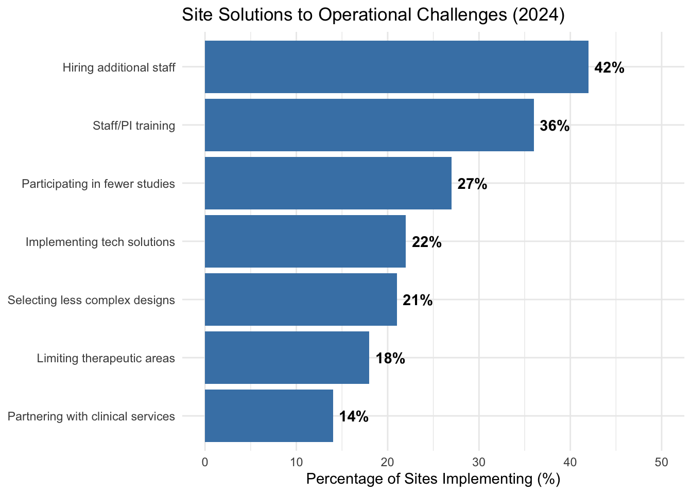
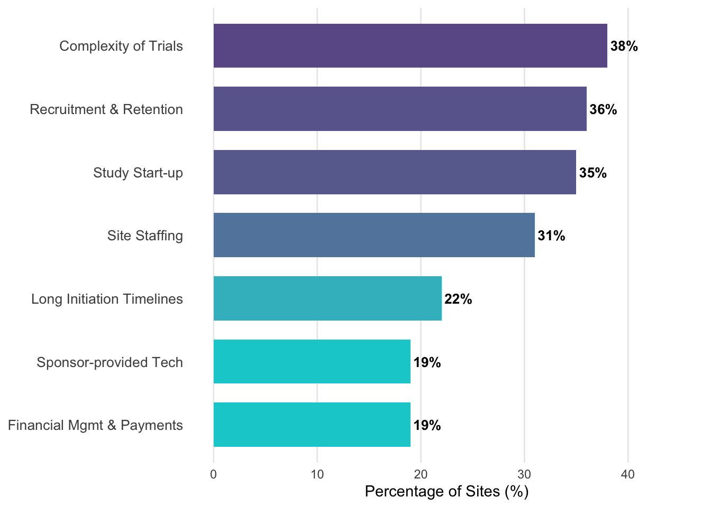
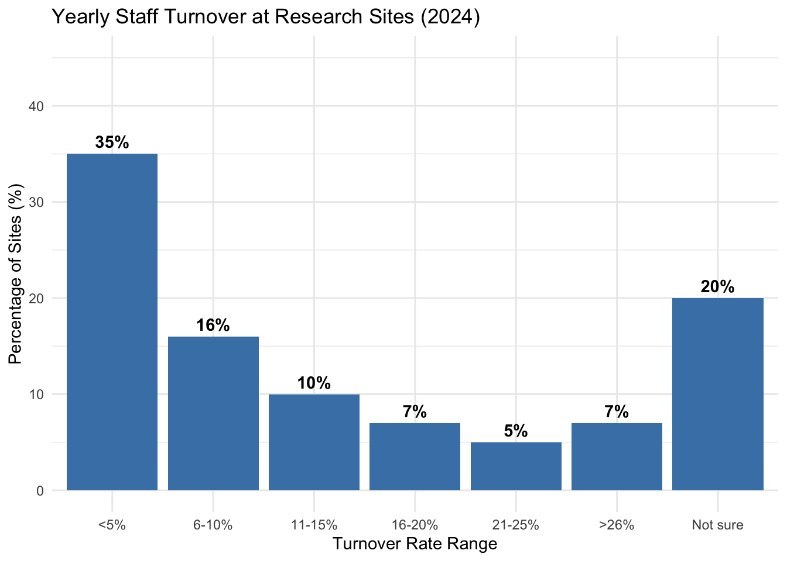

19 Patient Recruitment and Retention
A trial cannot succeed without patients. This simple fact underlies one of the most persistent challenges in clinical research: recruiting enough participants, quickly enough, to complete trials on time and on budget. The recruitment challenge has grown more acute in recent decades as trials have become larger and more complex, patient populations more specialized, and competition for subjects more intense.
The statistics are sobering. The Forum on Drug Discovery, Development, and Translation identifies the recruitment of clinical trial participants as one of the most “onerous” and high-risk steps in the entire development process, characterized by significant cost, time, and likelihood of failure (Wagner et al. 2018). Industry surveys have historically identified recruitment and staffing as the primary bottlenecks, but by 2024, the “Complexity of Clinical Trials” (38%) has emerged as the top challenge facing research sites, surpassing recruitment and retention (36%), study start-up (35%), and site staffing (31%) (WCG Clinical 2024). This complexity is having a measurable impact on site capacity: nearly half (47%) of all sites (and 50% of U.S. sites) reported that these operational challenges forced them to reduce the number of studies they agreed to participate in during the preceding year (WCG Clinical 2024).
In response to these pressures, sites are implementing various strategic solutions. As shown in Figure 19.1, while hiring additional staff (42%) and prioritizing training (36%) are common, many sites are also electing to participate in fewer studies (27%) or selecting trials with less complex designs (21%) to maintain operational viability.
Figure 19.2 illustrates the top site concerns that drive these strategic decisions.

Enrollment periods that were projected to take months stretch into years. Sites that were expected to contribute dozens of patients contribute single digits. Some trials are abandoned altogether when enrollment proves impossible.
The challenge has intensified as trials have grown larger. Decades of Tufts CSDD benchmarking document steadily rising protocol complexity and enrollment targets, with more procedures and stricter eligibility criteria per study (Tufts Center for the Study of Drug Development 2021). Meanwhile, only a small fraction of eligible patients ultimately enroll, even though public-perception surveys consistently find that most people say they would be willing to consider a trial if asked. Closing this gap between stated willingness and actual enrollment is one of the central challenges of recruitment.
Slow recruitment has cascading consequences. It delays patient access to potentially beneficial therapies. It increases trial costs as sites remain open longer and oversight continues. It reduces the commercial value of successful drugs by shortening their effective patent life. And it may compromise scientific validity if the prolonged enrollment period introduces population heterogeneity.
Recruitment difficulties have specific causes that can be addressed with targeted strategies, beginning with the calculus each prospective participant faces.
Understanding patient decisions. Patients weigh perceived risks against potential benefits when deciding whether to participate. While those with serious illnesses may see a trial as their most promising treatment option, those with well-managed conditions often weigh the uncertain medical risks against the practical burdens of frequent visits and travel. This decision is further influenced by altruistic motives and the level of trust a patient has in the healthcare system, a trust that can be impacted by a community’s historical experiences with clinical research.
19.1 Strategies for Recruitment
Effective recruitment requires reaching potential participants through multiple channels, as shown in Figure 19.3. At each stage of the funnel, potential participants are lost to various barriers.
flowchart TB
subgraph row1[" "]
direction LR
A["Target Population<br/><i>100%</i>"] --> B["Aware of Trial<br/><i>≈10-20%</i>"] --> C["Express Interest<br/><i>≈5-10%</i>"] --> D["Pre-Screened<br/><i>≈3-7%</i>"]
end
subgraph row2[" "]
direction LR
E["Full Screening<br/><i>≈2-5%</i>"] --> F["Eligible<br/><i>≈1-3%</i>"] --> G["Enrolled<br/><i>≈0.5-2%</i>"] --> H["Completed Trial<br/><i>≈0.4-1.5%</i>"]
end
row1 --> row2
| Strategy | Description | Best For | Typical Cost |
|---|---|---|---|
| Provider Referral | Physicians identify/refer eligible patients | Specialty conditions; Established relationships | Low-Medium |
| Community Outreach | Patient groups, advocacy organizations, support groups | Rare diseases; Close-knit patient communities | Low-Medium |
| Direct Advertising | TV, radio, print, digital media | Large trials; Common conditions | High |
| Social Media | Targeted campaigns on Facebook, Instagram, patient forums | Younger populations; Specific demographics | Medium |
| Registry Databases | Pre-screened patient lists from research networks | Rare diseases; Longitudinal studies | Medium |
| Decentralized Elements | Remote consent, telemedicine, home visits | Geographic barriers; Mobility-limited patients | Medium-High |
Table 19.1 compares different recruitment strategies and their typical applications.
Provider referral relies on physicians and other clinicians to identify and refer potentially eligible patients. Since most patients are not actively seeking trials, provider engagement is a primary driver of enrollment. However, busy clinicians may not think to mention trials to appropriate patients, so education and reminders are needed.
Direct-to-patient advertising uses traditional and digital media to reach potential participants directly. Television and radio advertisements, online banner ads, social media campaigns, and search engine marketing can all be employed. Regulations govern what claims can be made in such advertising.
Decentralized trial elements can reduce participant burden and reach populations that cannot easily travel to traditional research sites. Remote consent, home visits by nurses, virtual study visits, and direct-to-participant shipment of study medications all expand the potential reach of trials.
19.2 AI/ML-Enabled Recruitment and Patient Engagement
AI and machine learning are most usefully understood as improving recruitment through two pragmatic routes. First, they can make eligibility and outreach more computable, so that organizations can find potentially eligible participants in real-world data with less manual effort. Second, they can support scalable, consistent communication that reduces friction for potential participants and helps sustain retention. In practice, these are socio-technical systems: their value depends on data quality, workflow design, and human oversight, and they can introduce new risks if deployed without governance.
Making eligibility computable: feasibility and EHR-based identification
Before outreach begins, sponsors and sites must answer feasibility questions that determine whether a protocol is operationally plausible: how many patients are likely to qualify at a site or network, which criteria drive screen failures, and where capacity constraints will emerge. Data-driven feasibility uses historical EHR and claims data to estimate cohort size and to anticipate operational constraints such as visit cadence, laboratory requirements, and competing studies. This shifts planning from informal judgment toward testable assumptions, but the validity of estimates depends on how well eligibility criteria can be represented in data and how representative those data are of the intended trial population (U.S. Food and Drug Administration 2024b; Hripcsak and Albers 2013).
Automated identification from EHRs is best viewed as a pipeline rather than a single model: translating protocol criteria into a computable phenotype, executing it against clinical data, and then performing clinician or coordinator review before any contact or screening decisions. Many criteria map cleanly to structured elements (diagnosis codes, medications, laboratory values, procedures, and timestamps), while others reside in unstructured notes (symptom narratives, imaging interpretations, nuanced exclusions), making natural language processing a practical complement to rules and statistical models when assembling candidate lists (Hripcsak and Albers 2013).
Two infrastructure patterns commonly support these workflows. One is standardization through common data models and cohort tooling, exemplified by OHDSI and the OMOP Common Data Model, which enables cohort definitions to be executed consistently across sites in a federated manner (Hripcsak et al. 2015; Overhage et al. 2012). The other is standards-based interoperability, where SMART on FHIR supports substitutable applications that retrieve patient-level data through an API, and the FHIR Bulk Data Access specification supports population-level exports for governed research workflows (Mandel et al. 2016; Health Level Seven International 2024). Because EHR data were not originally collected for research, the practical constraints are often provenance, missingness, and fitness-for-purpose rather than model choice alone; sponsors should align their use of EHR data with regulatory expectations for documentation, traceability, and data integrity in clinical investigations (U.S. Food and Drug Administration 2018).
Engagement, retention, and equity in AI-mediated workflows
Communication technologies can also support recruitment and retention by answering common questions, providing consistent study education, collecting structured pre-screening information, scheduling reminders, and routing complex concerns to humans. The design challenge is to reduce coordinator load and participant burden without creating misleading medical advice or undue influence; human-AI interaction design and clear escalation paths are therefore central (Amershi et al. 2019). The evidence base for conversational agents in health remains mixed and context-dependent, with systematic reviews noting that many evaluations are early-stage and heterogeneous, and often lack robust safety assessment even when user satisfaction is high (Laranjo et al. 2018). In trials, electronic informed consent and remote communication can reduce friction, but they must preserve comprehension, voluntariness, and proper documentation (U.S. Food and Drug Administration 2016).
Because recruitment decisions shape who has access to research, governance and equity considerations are not optional. Privacy, bias, and accountability risks are amplified when models prioritize outreach or determine who is contacted first; reliance on proxies such as cost or utilization can encode structural inequities even when overall accuracy appears high (Obermeyer et al. 2019). A defensible approach therefore includes explicit inclusion goals, audit trails for cohort logic and model versions, subgroup performance checks, and clear procedures for human review and overrides (National Institute of Standards and Technology 2023; World Health Organization 2021; U.S. Food and Drug Administration 2024a, 2025). Reporting discipline matters as well: recruitment-facing tools should be documented with sufficient transparency for review and replication, and AI-enabled protocols and reports can be structured using emerging extensions such as SPIRIT-AI, CONSORT-AI, and TRIPOD+AI, depending on whether the system is a trial intervention, a reporting artifact, or an operational prediction model (Rivera et al. 2020; Liu et al. 2020; Collins et al. 2024).
19.3 Barriers to Recruitment
Several systemic barriers contribute to recruitment shortfalls. Lack of awareness remains a primary obstacle, as many eligible patients never learn about trials for their condition or how to access them. Even for those who are aware, restrictive eligibility criteria can exclude much of the candidate population due to common comorbidities or medications. Finally, the practical logistics of study participation (intensive testing schedules and dietary constraints) can be incompatible with daily work and family life, while cultural or linguistic misalignment can make the informed consent process feel intimidating or exclusionary.
Geographic Access and Rural Populations
Geographic proximity represents a particularly significant barrier to trial participation. Research sites are heavily concentrated in urban academic medical centers, creating systematic exclusion of rural populations. Between 2008 and 2022, only 42.4% of U.S. counties hosted at least one Phase 1-3 cancer clinical trial, with rural counties significantly less likely to have trial sites (Gu et al. 2024). In 2022, 86% of nonmetropolitan counties had no active clinical trials, compared to 44% of metropolitan counties (Unger, McAneny, and Osarogiagbon 2025).
This geographic concentration has measurable consequences. Nearly 17% of the U.S. population over age 35 lives more than 100 miles from an NCI-funded trial site, with this burden falling disproportionately on low-income individuals (Shriver et al. 2025). Travel distance, time away from work, and lack of reliable transportation create compounding barriers that effectively exclude rural patients from participation.
The scientific implications are substantial. Rural populations experience higher cancer mortality rates and different disease patterns, yet remain systematically underrepresented in the trials that generate treatment evidence. However, when rural patients do gain access to trials, outcomes data suggest that treatment disparities may be largely attributable to access rather than biology: analysis of 36,995 patients in 44 SWOG trials found that rural and urban patients achieved similar survival outcomes when given uniform access to care through clinical trial participation (Unger et al. 2018).
Solutions that work. Evidence-based approaches to improving rural access include:
Community-based trial networks. The NCI Community Oncology Research Program (NCORP) extends trial access to community settings. Over nearly four decades of enrollment to federally sponsored network-group trials, roughly 19% of participants have come from rural areas, matching the rural share of the U.S. population and demonstrating the reach of community-based networks (Unger, McAneny, and Osarogiagbon 2025).
Decentralized trial elements. Telemedicine, remote monitoring, and home-based visits reduce travel burden. A small pilot comparing decentralized and conventional site models reported that 89% of patients in the decentralized arm completed the study versus 60% in the conventional arm (Sommer et al. 2018), though such comparisons may reflect selection effects, since the sites and patients willing to adopt decentralized elements may differ systematically. Remote consent, virtual assessments, and direct-to-patient drug shipment can maintain data quality while expanding access.
Mobile health units. Mobile clinics bring trial and screening activities directly to rural communities, reducing travel barriers while maintaining protocol compliance. The Ohio State University Comprehensive Cancer Center, for example, coordinates a mobile mammography program that brings breast cancer screening to women in rural areas of Appalachia (Unger, McAneny, and Osarogiagbon 2025).
From an operational standpoint, addressing geographic barriers requires intentional site selection that extends beyond high-volume academic centers to include community hospitals, federally qualified health centers, and practices embedded in underserved regions. Sponsors must assess not only current site capability but also potential capability with appropriate infrastructure support.
19.4 The Importance of Retention
Recruiting patients is only the first stage of the challenge; maintaining their engagement throughout the trial is equally critical. High dropout rates can severely reduce a trial’s statistical power and introduce bias, particularly if the attrition is related to treatment response or side effects. Successful retention requires constant attention to participant experience, offering flexible scheduling, timely compensation, and clear, empathetic communication from the study staff. The relationship between the investigator and the participant is central to retention; patients who feel personally connected to the research team are more likely to continue through to the study’s conclusion.
Physician Participation and the “One and Done” Phenomenon
The recruitment crisis is exacerbated by a severe contraction in the investigator pool. As detailed in Chapter 18, the number of unique U.S. investigators declined by more than 78% between 2020 and 2024, driven by a combination of post-pandemic normalization, biotech funding contraction, and mounting administrative burdens (WCG Clinical 2024).
Investigative research is also plagued by low retention of investigators themselves. Approximately 66% of physicians who participate in a clinical trial do so only once (the so-called “one and done” phenomenon) (WCG Clinical 2024). The reasons for this lack of sustained engagement include the sheer complexity of modern protocols, the mounting technology burden, and inadequate financial structures that fail to account for the heavy time investment required relative to routine clinical care. When two-thirds of the investigator community exits the research ecosystem after their first experience, the industry loses critical expertise and forces sponsors to continually onboard new, less-experienced sites, further slowing the development process.
This attrition extends beyond investigators to the broader research staff. High turnover among clinical research coordinators (CRCs) and nurses disrupts continuity and increases the risk of documentation errors. While turnover rates have stabilized somewhat in 2024, a significant portion of the industry still faces high churn, complicating the long-term viability of sites (see Figure 19.4).

Strategic Enrollment and Generalizability
Effective enrollment goes beyond meeting accrual targets: it requires enrolling participants who reflect the populations that will ultimately use the treatment. This is not merely a regulatory preference but a scientific necessity: drug metabolism, disease expression, and treatment response vary systematically across age, sex, genetic factors, and comorbidities.
Consider the scientific rationale. Pharmacokinetics differ substantially by age due to changes in renal and hepatic function, body composition, and drug-drug interactions from polypharmacy. Sex differences affect drug distribution (body fat percentage), metabolism (CYP enzyme activity), and hormonal influences on disease pathways. Genetic polymorphisms in drug-metabolizing enzymes (e.g., CYP2D6, CYP2C19) vary in frequency across populations and can alter therapeutic response and toxicity profiles. Disease phenotypes themselves may differ: hypertension, diabetes, and cardiovascular disease show distinct clinical presentations and progression patterns across demographic groups.
If trial enrollment systematically excludes the elderly, women, or specific genetic backgrounds, the resulting efficacy and safety data may not generalize to real-world use. A treatment optimized for a narrow trial population may be suboptimal, or even unsafe, when prescribed more broadly. Pediatric dosing cannot be reliably extrapolated from adult trials. Elderly patients with multiple comorbidities may experience different benefit-risk profiles than younger, healthier trial participants.
From an operational standpoint, representative enrollment requires intentional design: site selection that reaches diverse geographies and care settings, eligibility criteria that do not unnecessarily exclude common comorbidities, and recruitment strategies that address logistical barriers (transportation, language, visit burden). Regulatory guidance increasingly expects sponsors to justify enrollment targets based on the intended use population and to monitor accrual across relevant subgroups during the trial (U.S. Food and Drug Administration 2024a). The regulatory framing here has been in flux: FDA’s June 2024 draft guidance on diversity action plans was removed from the agency’s website in early 2025 and later restored by court order, but its final version was not issued by the statutory deadline (Grossi 2025). A separate December 2025 final guidance, Enhancing Participation in Clinical Trials, retains the recommendation to enroll a broader, more representative population while dropping the explicit “diversity” framing (U.S. Food and Drug Administration 2025). The statutory basis for representative enrollment and its scientific rationale are unchanged.
Digital retention toolkit: engagement beyond enrollment
Traditional retention frameworks addressed dropout and loss to follow-up through clinic visits, phone calls, and mailed reminders (Meinert 2013). In the DCT era, retention increasingly depends on digital engagement: app-based reminders, SMS check-ins, telehealth visits, and patient portals that reduce the friction of continued participation (U.S. Food and Drug Administration 2024c).
The operational challenge is that digital engagement requires infrastructure (validated platforms, help desk support, accessibility accommodations) and ongoing attention (message cadence, content relevance, response to participant feedback). Poorly executed digital engagement can feel intrusive or impersonal, potentially increasing dropout rather than reducing it.
TipChecklist: Digital Retention Toolkit
- Platform selection: validated ePRO/eCOA and patient communication platforms with accessibility features (screen reader compatibility, multilingual support, offline functionality where relevant).
- Message cadence and content: prespecified reminder schedules; personalized content where feasible; clear escalation paths for non-response.
- Telehealth integration: defined workflows for remote visits (scheduling, consent for recording if applicable, documentation, safety escalation).
- Help desk support: accessible support for technical issues, with defined response times and escalation to site coordinators for clinical questions.
- Retention monitoring: dashboards tracking visit completion, ePRO compliance, and engagement metrics; predefined thresholds for coordinator outreach.
- Participant feedback loop: mechanism for participants to report burden concerns or technical issues, with documented response and protocol amendment pathways if patterns emerge.
19.5 Metrics and Monitoring
Effective recruitment management requires close attention to metrics, summarized in Table 19.2.
| Metric | Definition | Target | Action if Off Target |
|---|---|---|---|
| Screening Rate | Patients screened per site per week | Protocol-specific | Increase outreach; Boost advertising |
| Screen Failure Rate | % screened who are ineligible | <50% | Review eligibility criteria; Improve pre-screening |
| Enrollment Rate | Patients enrolled per site per month | 2-4 typically | Additional training; Site support; Consider closing site |
| Retention Rate | % enrolled completing study | >85% | Reduce protocol burden; Improve patient engagement |
| Time to First Patient | Days from site activation to first enrollment | <30 days | Expedite startup; Ensure materials available |
Clinical teams must monitor these metrics continuously to identify emerging enrollment problems. Low screening rates often indicate a need for broader outreach or increased advertising, while high screen-failure rates may suggest that eligibility criteria are overly restrictive or that pre-screening processes need refinement. Similarly, poor enrollment and retention rates should prompt a review of the protocol’s practical burden on patients and a potential investigation into site-level training or engagement strategies. Enrollment should also be tracked against projections so that emerging problems can be caught and corrected before delays become severe. AI agent applications across the full development lifecycle, including site identification, feasibility prediction, and decentralized trial infrastructure, are covered in Chapter 26.